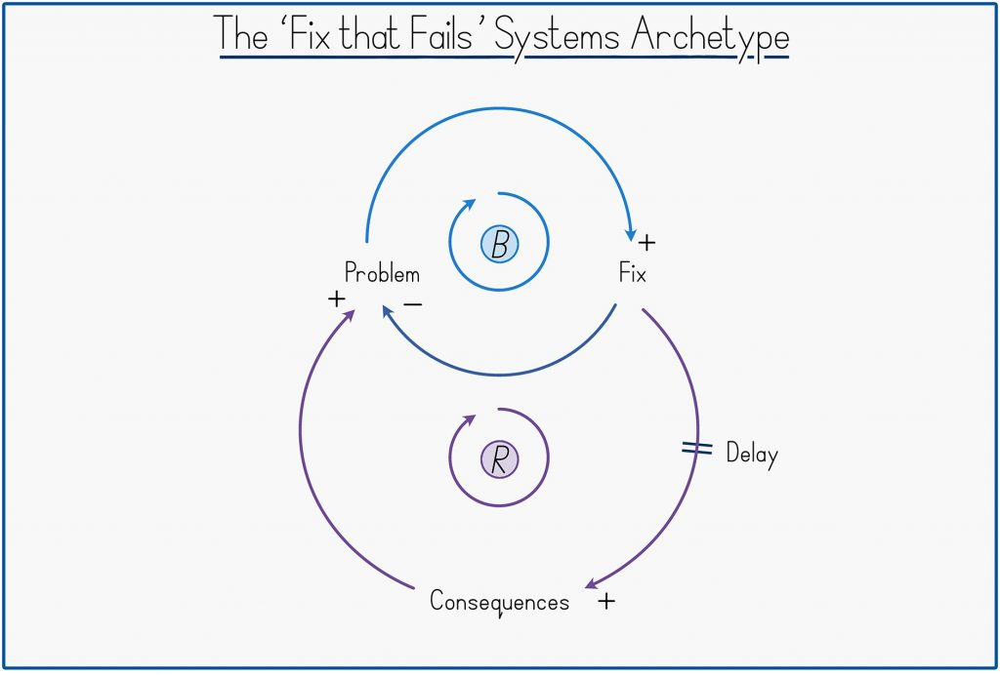
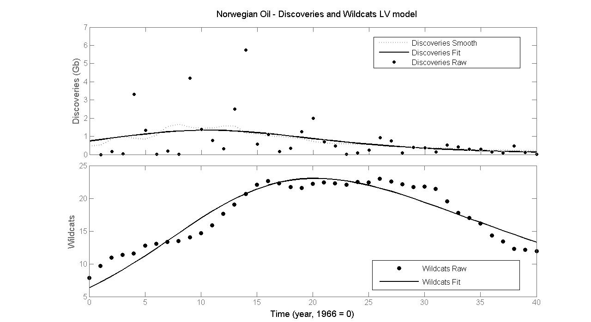
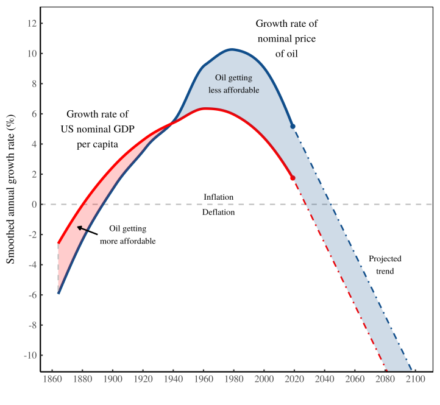
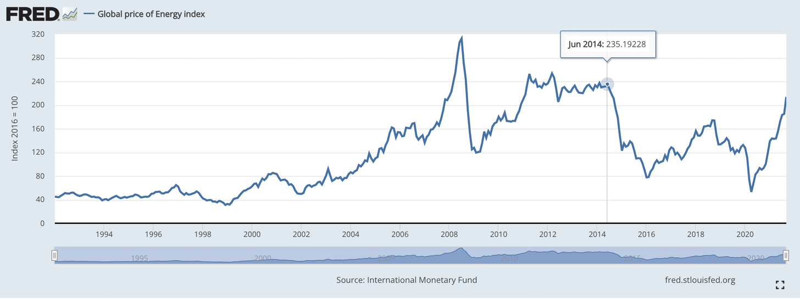
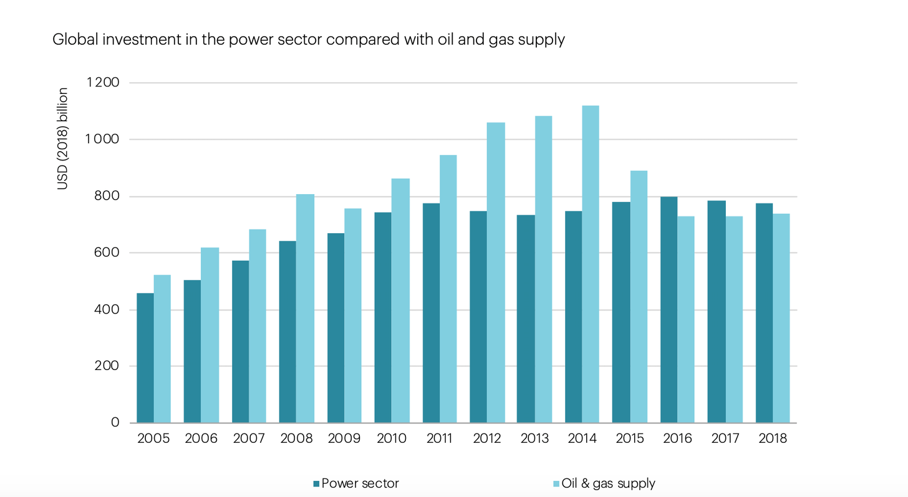

61 Resource Economics
61.1 Sustainability
61.1.1 VML - Voluntary Market Led Sustainability
Austin
Though our roughly 6-decade response to global environmental challenges – since Rachel Carson and others alerted us in the 1960s – is a long time for an individual human being, from the perspective of the complex system of humankind, all our efforts to date constitute merely the first adaptive responses we have been able to implement in short order. The form of this emergency response has necessarily been constrained by the patterns of collective behaviour we had arrived at before recognizing our new context, for reasons that have nothing to do with the new context. It is a crisis precisely because it has not found us prepared – behaviourally, organizationally, even cognitively. Predominantly a Voluntary Market-led (VML) response What has been the nature of this first response? Of course, it has been multi-faceted, but as befits our market-centric modern society, it has come to be dominated by voluntary market-led strategies under various banners – ethical investing, socially responsible investing (SRI), corporate social responsibility (CSR), environmental, social and governance (ESG) initiatives, impact investing, divestment campaigns, reporting and disclosure frameworks, corporate engagement efforts, stakeholder advocacy and more.
VML is most easily defined by what it opposes. ‘Voluntary’ denies, or at least strongly opposes, the need for enforceable regulations and policies to achieve sustainability goals. ‘Market-led’, implicitly upholds the idea that the key market dynamics of profit maximization and economic growth are not only not impediments to sustainability but critical drivers of the solution.
VML emerged as our predominant adaptive strategy from the mid- 1990s, not out of any confidence that it would be a sufficient response, but because it was the only scalable response established Western socio-economic norms could tolerate at that time.
In short, a major pattern of the last 50 years is that a long-gestating neoliberalism captured a fledgling environmentalism and VML’s ‘win-win’ proposition was about all the environmentalism we could muster. The question today is whether this VML adaptive response can generate ‘enough sustainability before it is too late’.
While the VML meta-strategy has certainly delivered gains that would not otherwise have occurred – in accelerated green innovations, widespread awareness, and incremental behaviour change – after 25 years, it is becoming apparent VML cannot generate ‘enough sustainability in time’, which is increasingly the only interpretation of sustainability that matters. Basically, our first response strategy does not seem to be working.

Figure: The ‘Fix that Fails’ Archetype. A top loop ‘balances’ an initial problem. (‘The problem leads to more of a fix that leads to less of the problem’). However, it is offset by a second, delayed, loop that only reinforces the initial problem (‘The fix leads to consequences that lead to more of the problem’).
If VML is the ‘first response’ of a complex system to an abrupt new awareness of context, certain concepts developed to understand complex systems can help us identify the type and extent of response VML has been and what its limitations now point to.
What I will call ‘systems thinking’ – sometimes also ‘complexity science’ or the study of ‘complex adaptive systems’ – is now inexorably and beneficially on the rise as a counterpoint to the reductionism that has underpinned Western thinking for the last 350 years.
Systems thinking invites two high-level conclusions about the VML strategy – helpfully both alliterative. First, the tool of Causal Loop Diagrams suggests that VML is a ‘fix that fails’ – an ubiquitous pattern in which genuine ‘fix’ actions are offset or even completely overturned by unintended ‘fail’ consequences.
More encouragingly, reflecting on the layered adaptive architecture of complex systems reveals that VML has been a possibly inevitable, not unhelpful ‘defence at first depth’. Complex systems adapt by working through ‘fixes that fail’ until they land upon a deeper ‘fix that works’.
It is within our capabilities to adapt in this way, but it implies we must graduate quickly from the initial shallow response of VML to deeper responses of policy and culture change that now offer the only realistic means of averting climate and ecological crisis in time. Because the nature of these deeper changes conflicts with certain premises of the VML strategy – particularly VML’s compromised ability to advocate for economic growth-reducing demand-side measures – initiating such changes requires the conscious giving up of certain beliefs and claims made for VML. As such, among the individuals who can most powerfully and credibly trigger the transition to deeper changes are precisely those individuals who have historically promoted VML strategies, whose public ‘change of mind’ might now constitute a disproportionately powerful signal of the limitations of our first response.
Missing the physics for the finance. Plainer still, one can look through the economics to the underlying physical reality. A sustainability discourse conducted in business and economics terms continues to miss the physics for the finance. Our climate and biodiversity challenges are fundamentally driven by human transformation of matter and energy at a scale and pace that exceeds Nature’s capacity to absorb. In response, VML aims to transform the world more sustainably, but the building of a clean economy has simply become the new banner by which we accelerate our transformation of the physical world. We frame the build-out of a clean economy as ‘greener’, but the Earth just registers ‘yet more’ transformation of matter and energy overwhelming natural processes. VML denies that a large part of our sustainability response requires establishing a slower and gentler interaction with Nature to fall back into balance with its pace. Less, not more.
Layered architecture of complex systems A universal feature of complex systems is that they emerge or self-organize as hierarchical or layered systems comprised of fast-responding surface adaptive capabilities underpinned by slower-moving capabilities. This results in complex systems responding to adaptive challenges in a layered or cascade fashion.
Layered behavioural architecture seems to be Evolution’s elegant solution for handling the innate challenge facing all living things – from simple organisms to complex societies – namely the need for some rigidity to uphold and perpetuate existing beneficial behaviours and yet also some flexibility to respond to new circumstances. Both are beneficial but must be in tension. A complex system in adaptive crisis must find a ‘fix that works’ before it is too late.
At the even lower level of ‘culture’, the predominant Western culture remains firmly anchored around consumerism and has most recently taken to celebrating people playing spaceship.
With our heavy dependency on VML strategies to address the sustainability crisis, we are effectively defending at first depth only. Governance and culture are certainly more entrenched, slower moving forces, but it is when these gears begin to turn that society really starts to shift. As Brand puts it: ‘Fast gets all our attention, but slow has all the power.’ As the profundity of our sustainability crisis sinks in – ‘sinks in’– it is becoming clear that we must solve our sustainability challenge at a deeper level than initially thought. In a sense the challenge of our ‘race against time’ adaptive crisis is to now shift deeper and more powerful mechanisms of social change faster than perhaps ever before.
To accelerate deeper change requires an emergency review of the – entirely pre-Anthropocenic – thinking implicit in our governance structures and cultural beliefs, how they got that way and how they might be different. It is layers again, not of our institutions, but of our prior cognition and reasoning that first shaped those institutions and is now reinforced by them.
Western societies have iterated towards a market primacy of self-organization over the last two centuries, in the belief that it was the best means by which to advance human welfare. However, market primacy of human self-coordination is itself a fix that fails because the positive benefits of market-driven economic growth and innovation are undermined by lagging, unintended consequences not registered by the market system – ‘externalities’ – of a scale far greater than most economists and politicians have historically been willing to recognize, and than government and philanthropic efforts currently absorb.
A study by Robert Costanza and colleagues estimated the monetary value of the ‘services’ provided free by the Earth’s ecosystem at $125 trillion in 2011, nearly twice the value of global GDP (gross domestic product). 54 Just from this one assessment of some ecosystem benefits, much more ‘value’ is unknown to the market than known. The same study estimated that annual ecosystem services had been depleted by $20 trillion since 1997, during which time conventionally measured real GDP increased by $29 trillion, for a net gain of $9 trillion While conventional global GDP grew by 3.5 percent per annum during the period, a fuller measure of ‘total wealth creation’ would have grown by only 0.3 percent to 1.7 percent per year – that is, ‘growth’ would have been at most half what we registered, at worst virtually non-existent.
What we are effectively doing is counting the positive monetary growth of the market system’s ‘fix’ loop, while ignoring the unmonetized costs of the ‘fail’ loop.
Scale of externalities not yet accepted Possibly the key driver of our sustainability crisis is that the dominant Western culture has not achieved sustained acceptance – distinct from mere theoretical admission – of the scale of market externalities and what that must imply for claims made about the superiority of market-led coordination.
‘We need more data’ seems to be the universal belief. No, we don’t. We have more than enough data. We need acceptance, which is qualitatively different to admission, such that we cannot simply disclose more and more data and expect to arrive at acceptance.
he failure of economics to cultivate the sustained acceptance of externalities is increasingly becoming the most pertinent fact about the whole discipline. Not only did economics – the ‘science of markets’ – not encourage acceptance of externalities, but it also made strenuous effort to downplay or even trivialize them.
The hope of early economists, subsequently bolstered by ideals of complete market theory, was that market systems would be self-regulating, removing or minimising the need for government regulation. And, certainly, an economy contains many balancing processes. If the demand for bread increases, the price of bread will rise inducing more supply so bringing the price back down again. The market contains a great many ‘self-regulating’ or rebalancing, loops. However, the market is not only self-regulating, but also susceptible to positive reinforcement loops that can become runaway problems. This was crystallized by Brian Arthur in 1990, when he identified that economic systems did not just exhibit ‘diminishing returns’ – or balancing loops – but also, quite commonly, ‘increasing returns’ – or reinforcing loops. Because neoliberalism has granted markets primacy, and because markets are vulnerable to large-scale runaway effects, neoliberalism is effectively a runaway feedback loop.
Many of our biggest problems - global debt accumulation, wealth inequality, climate change and biodiversity loss – all exhibit runaway, vicious spiral, dynamics seemingly beyond the powers of the market to rein in.
The erosion of the government’s capacity to modulate market forces is itself the consequence of certain powerful reinforcing loops intrinsic to neoliberal logic.
In what might be called ‘Friedman’s Feedback Loop’, corporations’ ‘social responsibility to maximize profits’ has, over time, seen them spend large amounts of money lobbying government to change the rules to allow them to increase profits, providing them with more resources to lobby governments etc.… As this inexorable process of regulatory capture persists, a society progressively steers less by a sense of what is ‘good’ and more by what is ‘profitable’.
Equally, in what might be called ‘Reagan’s Reinforcing Loop’, if perception spreads that ‘markets are the solution and government is the problem’, human talent will slowly but surely be drawn towards the private sector and away from public service.
Our still extending – and so still incomplete – market system continues to annex new, previously uncommodified, realms, but in asymmetrical fashion. It opens new frontiers of profit but cordons off areas of potential cost.
The argument for market primacy is predicated on the power of price signals to achieve a more efficient allocation of goods and services than might be achieved by the cumbersome and coercive ‘central planner’, but in practice, this power of price signals can now only be extended to generate new profits, not new costs. And so, we are denying ourselves the use of the market system and its price signals to tackle possibly the most critical scarcity problems we have ever identified – limited atmospheric capacity for greenhouse gas emissions and limited capacity of ecosystems to absorb or tolerate our activities.
As such, one can turn the tables and ask: if we don’t need prices for the greenhouse gas emissions driving runaway climate change, and we can instead rely on people voluntarily to take the steps consistent with those prices without them being implemented, why bother having prices for anything at all? Why not just assume that people will always voluntarily behave in ways that collectively advance human welfare?
Among the more effusive accolades made of the market system is that it is a form of ‘intelligence’. And while there is something to this in the autonomous way the market system marshals goods, services and human time and effort, it can only be a partial intelligence because the market has no inkling of the non-commoditized and non-priced world.
A market-centric culture commits to follow where profit leads. Quite important, then, that either we calculate profit sustainably or we temper our market-centricity.
At a yet deeper level, one can trace the threads of today’s market-acquiescing VML response to momentous cognitive developments of the 17 th century that shifted the Western world onto an entirely new cultural metaphor, which in turn paved the way for our excessive credulity in the power of markets, and our equating of market growth with moral improvement.
Just as scientists rarely waste time questioning long-established axioms of their discipline, so our shared myths or metaphors warrant little comment or reflection because, after all, the view from within a culture is that it is so obviously the way the world is and must be!
The essence of reductionism is that knowledge can best be acquired by breaking things down to pieces, learning how the pieces work and then ‘adding back up’ this knowledge to arrive at a greater comprehension of the whole. At the dawn of the Scientific Revolution, reductionism profoundly shaped our sense of what science even was. A scientific method was then ‘too hastily expanded’ into other fields of investigation, including – fatefully – those concerned with living, complex things. This had the inadvertent consequence of rendering other methods of investigation more suitable for living things as ‘non- scientific’ – a pejorative designation that has catastrophically held back our comprehension of the living world, including ourselves, and encouraged a dismissiveness of non-Western insights and traditions.
However, the slowly-dawning meta-learning of the Scientific Revolution, spearheaded by the rise of systems thinking, is that as you move ‘up’ from inanimate objects to more complex systems – from ‘dead’ things to ‘living’ things – so reductionism gradually loses its power as an explanatory method, because the ‘add back up’ assumption breaks down. A core essence of systemism is that ‘the whole is more than – or different to – the sum of the parts’. ence as we move up, we repeatedly encounter new levels of organization whose behaviours cannot be fully anticipated even with complete knowledge of the parts. These ‘discontinuities’ in emergent complex systems represent new levels of complexity, requiring understanding in their own right. Most important of all – though we cannot get into it here – is that at some point on this upward journey, we encounter something we have come to call a ‘mind’, capable of deriving meaning from the world and forming expectations about it, both critical, but subjective, capacities of living things brutally excised from the reductionist ‘scientific’ view of the world.
Essentially, the Western mind fell into a Valley of Reductionism, which was positively beneficial for physics and chemistry, but which has been a decidedly poor vantage point from which to understand living systems, including human society and global ecology.
The problem is not that Smith or Mandeville were wrong about the market’s powers to transform greed into good, but that we came to believe that the market could fully capture and neutralize greed. But if markets are incomplete – if externalities exist – then markets do not capture and neutralize all the effects of greed, with the consequence that some greed slips through the market net and behaves like, well, plain old greed with excesses that destabilize the social and ecological system.
We have lost sight of the earlier, intuited, understanding that admonitions against greed constituted an important balancing loop in the complex system of human society.
Having given greed freer rein, we have gradually super-sized the impulse via the creation of corporations – ‘corporate persons’.
We have a market system that does not ‘add everything back up’ and so cannot neutralize all greed, some of which spills out to drive inequality and destroy the ecosystem. At the same time, old cultural injunctions against greed have lost their potency. With incomplete markets and diminished capacity to appeal to individuals’ moral sense, we find ourselves systemically and institutionally induced to free ride upon each other and the social and ecological costs slowly accumulate in the background.
Though we have tended to perceive our ecological challenges as dating from the mid-20 th Century, I believe we will not be able to solve them until we recognize them as a lagged response to profound cultural shifts dating back to (at least) the 17 th Century. That does not imply that we need to roll back the clock and reinstate a pre-market society, only that we need to re-assess each link of the chain of thought that brought us to this point to see whether each link still makes sense in the abruptly different context of the Anthropocene.
If the context changes around a culture – as with the shock of the Anthropocene – a whole culture may end up displaying unconscious incompetency, by, say, polluting its own atmosphere, destroying its natural base, or creating social inequalities that slowly tear society apart.
World as Nested Complex System Seeing the world as an Emergent Nested Complex System brings three key features of living systems into view that enable us to understand how complex systems might adapt in a crisis.
- Enabling constraints.
The innate structure of a complex system is the counterintuitive idea of ‘enabling constraints’ or ‘constraints that deconstrain’. ‘Constraints that deconstrain’ expresses the idea that the pay-off to the constraint is a new, ‘higher’ space for the system to explore. The idea that a constraint is an enabler or, in reverse, that ‘freedom comes from constraint’ is counterintuitive but it pervades systems architecture and is everywhere once one starts to look for it. What pops out towards the top of the human stack of constraints are experiences we describe as ‘free’. Individual freedom is dependent on the underlying enabling constraint of a Rule of Law and prior norms of justice. What gives us our freedom is everyone else constraining themselves to respect our rights. The misleadingly named ‘free market’ is entirely dependent on the enabling constraint of legally enforceable property rights. Constraints are the sine qua non for the self-organization of an emergent system. They are the scaffolding that brings complex life up out of the primordial soup.
- Path dependency
Complex systems simply have not had enough time in the history of the Universe to try all possible solutions to land on the optimal path, so each complex system constitutes a highly path-dependent exploration of a vast ‘possibility space’. One visualization of our sustainability crisis is that our human complex system has emerged in a context of an effectively limitless world with new frontiers always on hand, only to abruptly find itself in a finite and fragile world. Our emergent behaviour was not premised on this assumption and many ‘old’ ideas, habits, traditions and customs are no longer consistent with it, even though they are familiar and engrained. In some sense, the human ‘stack’ is now perceived to be in the wrong place relative to where it needs to be.
- Two directions of adaptation
The emergence of each complex adaptive system represents an upward exploration within the space laid out by lower constraints, of which the base immoveable constraints are the laws of physics and upon which each successive layer establishes successive guardrails directing further upward movement. With the ‘extended order’ market system now on top of the human stack, we have found a mechanism that accelerates upward innovation via the spur of individual profit gain. New ideas are ‘market-tested’ to see what works and what does not. But the implication is that we are emerging upwards where profit directs. In contrast, there is a second type of learning which can be visualized as moving sideways, in an ‘unlearning and relearning’ process – or an ‘uninstall and reinstall’. It might also be termed ‘calibrative’ learning because it amounts to recalibrating some existing parts of the established structure in the face of new context. In a sense, a complex system is continually correcting for imbalance. Such learning is effortful and costly, because it is not just the ‘building on top’ of upward learning but the intentional breaking of a trusty habit or once-cherished custom, which may have been justified at an earlier time but is now deemed wrong or unhelpful. Part of the cost of sideways learning is the difficult crystallization of a psychic loss, or that what we may have been doing for years or decades is now ‘wrong’, by today’s contextual demands.
The innate tension between VML strategies and policy and cultural changes is that they represent two fundamentally different directions of adaptive response. Many of our green solutions represent yet more complexity, not just in the design of more high-tech components – from intricacies of new batteries to advanced materials – but in the more complicated supply chains and two-way, intermittency-handling electricity grids behind the scenes. All the ‘clever’ sensors, smart meters and real-time demand management programs add up to more complexity. Overwhelmingly, our VML strategies are upward movements.
The beneficial adaptive power that lower levels have over the higher levels is that they can reframe the space in which higher level complexity can take place. Hence, with its powers to set property rights, prices and regulations, government has the capacity to re-shape the entire ‘market space’. The real adaptive value of this power is to constrain or abolish activities currently taking place at the higher level, which are now deemed to be a threat to the system. The cost of lower change is why our first-choice strategy is invariably to try and avoid it.
Policy and culture are prior to markets. The widespread inclination by VML practitioners to believe that any sustainability effort is better than none at all misses the tension that exists between VML and policy strategies. The natural enthusiasm for VML is in part a manifestation of the difficulty of calibrative learning. We are hoping that market-led innovation may obviate the need for wrenching uninstall and reinstall of property rights, laws and cultural norms, but it is looking less and less likely that will work. Yet, as a market-reaffirming movement, the execution of VML strategies is a daily reinforcement of market primacy, which postpones deeper level policy and cultural changes whose beneficial adaptive power is precisely that they can choke off certain market activities we can no longer tolerate, in a way that market-conforming VML strategies cannot.
Where the market surpasses government is in its real-time facility to respond to ever- changing supply and demand signals. Markets are great at detail.
An emergent nested view of human society suggests that a better conception of government is as a ‘central director’ not as a ‘central planner’. What a central director can do much more effectively than markets is work at a lower level of the system to redirect the innovation space in broad brush strokes by adjusting property rights.
Granting that a ‘central director’ – preferably of capable, elected human beings – can see broader and further into the future than partially-sighted markets, would be to hitch a complementary intelligence to the market intelligence we largely steer by today. Re-legitimizing government’s role to establish new property rights – ‘you know, government might be a key part of the solution’ – should now be a central goal of any business with sustainability aspirations. It would effectively be to re-embed markets that have become, as Polanyi warned, too disembedded. It would be to make markets a tool of human culture, not human culture the by- product of markets.
It will dawn on people that an immediate consequence of limits-respecting markets must be a slowdown in ‘growth’ as we have been measuring it because they would reflect new limits we have not been considering.
In the real world of very incomplete markets, things of human value lie in two separate realms – the marketed domain and the non-marketed domain. Some of the growth of the marketed economy genuinely arises from human ingenuity and creativity unlocking better ideas and products from new combinations of inputs. This seems like ‘good’ growth, which ought to be celebrated and encouraged. However, other parts of monetized ‘growth’ arise from simply running down the stocks of what is valuable but in the non-marketed realm. This is the illusion of wealth creation based on registering the increase in marketed value, but not recording the decrease in unmarketed values. In contrast to growth from genuine ingenuity, this is ‘wealth’ conjured up by the Unmentionable Cost-Shifting Foot.
Our measured economic ‘growth’ overall combines in unknown proportions a ‘creative growth’, which we want to encourage, and a ‘parasitic growth’, which we do not.
I don’t know if the term ‘capitalism’ would survive the journey to this new cultural ground – or whether that would even be desirable. The specific problem with the term ‘capitalism’ is that its mere utterance upholds the entrenched view that markets have primacy over policy and culture, which just locks in the externality-denying capitalism we currently practice. Instead, the goal must be to have a market system that operates within a human cultural context that recognizes market externalities are real and significant. This wouldn’t be capitalism or socialism so much as a model of limits- respecting social coordination, for which I am not sure there is yet a name.
Returning to the surface, we arrive not at a ‘sustainable economy’ but at the ‘economy of a sustainable culture’. We will have effectively internalized that sustainability is a property of the whole, not of the parts.
Our current market primacy of self-coordination is rooted in thinking that is entirely pre-Anthropocenic.
The great hope of the VML strategy was that there would be a business case for sustainability. But, if sustainability must mean ‘sustainable enough before it is too late’, the meta-learning is that there is just not much of a business case to rely on. The business case is simply too weak and compromised a force to promote enough change fast enough. Instead, the moral case for sustainability is going to have to carry most of the load from here.
The shock of the Anthropocene profoundly challenges some of the core assumptions of the last 50 years – if not 300 years – of Western culture. The sustainability challenge is nothing less than our ability to transcend the neoliberal stage of development we had reached and prematurely thought might be the end of our quest for the ideal form of human self-organization. But, it has seen those that would defend today’s capitalism merely defending an externality-denying capitalism we cannot afford.
To counter the usurpation of markets over culture, we now need a reverse usurpation whereby those who can see what has happened work to re-legitimize government and other cultural institutions to take the tough, moral decisions that are beyond the reach of corporations duty- and norm-bound to profit-maximize. The long-run goal for a sustainable business should be to help forge a sustainable culture.
Austin (2021) Market-led Sustainability is a ‘Fix that Fails’… (pdf)
61.1.2 ‘Sustainable Growth’ - An Oxymoron
Daly Memo
It is impossible for the world economy to grow it’s way out of poverty and environmental degradation. Sustainable growth is impossible.
In its physical dimanesions the economy is an open sub-system of the Earth ecosystem which is finite, nongrowing and materially closed. As the economic sub-system grows it incorporates an even greater proportion of the total ecosystem into itself and must reach a limit at 100 percent, if not before. Therefore its growth is not sustainable.
The term “sustainable growth” when applied to the economy is a bad oxymoron - self-contradictory as prose, and unevocative as poetry.
Sustainable Development (qualitatively) OK Even ‘green growth’ is not sustainable.
In the past 200years we have developed a culture dependent on exponential growth for its economic stability.
To delude ourselves into believing that growth is still possible and desirable if only welabel it ‘sustainable’ or ‘green’ will just delay the inevitable transition andmake it more painful.
Precisely because quantitative and qualitative change are very different it is best to keep them separate and call them by different names. To grow means ‘to increase in size by the addition of material through assimilation or accreation’. To develop means ‘to expand or realize the potentialkities of; to bring gradually to a fuller, greater, or better state’. When somethings develops it gets different.
The concept of optimal scale of the aggreagte economy relative to the ecosystem is totally absent from current macroeconomics.
Microeconomics, which is almost entirely devoted to establishing the optimal scale of each micro level activity by equating costs and benefits at the margin, has neglected to inquire if there is not also an optimal scale for the aggreagte of all micro activities.
Nonrenewable resources should be depleted at a rate equal to the rate of creation of renewable substitutes. Projects based on exploitation of nonrenewable resources should be paired with projects that develop renowable substitutes. The net rents from the nonrenewable extraction should be separated into an income component and a capital liquidation component. The capital component would be invested each year in building up a renewable substitute. The separation is made such that by the time the nonrenowable is exhausted, the substitute renewable asset will have been build up by investment and natural growth to the point where its sustanable yield is equal to the income ’component. The income component will have thereby become perpetual, thus justifying the name ’income’æ. which is by definition the maximum available for consumption while maintaining capital intact.
Daly (1990) Sustainable Growth. An Impossibility Theorem (pdf)
61.2 Resource Extraction
Bardi on Hubbert
The well known “Hubbert curve” assumes that the production curve of a crude oil in a free market economy is “bell shaped” and symmetric. The model was first applied in the 1950s as a way of forecasting the production of crude oil in the US lower 48 states. Today, variants of the model are often used for describing the worldwide production of crude oil, which is supposed to reach a global production peak (“peak oil”) and to decline afterwards. The model has also been shown to be generally valid for mineral resources other than crude oil and also for slowly renewable biological resources such as whales. Despite its widespread use, Hubbert’s modelis sometimes criticized for being arbitrary and its underlying assumptions are rarely examined. In the present work, we use a simple model to generate the bell shaped curve curve using the smallest possible number of assumptions, taking also into account the “Energy Return to Energy Invested” (EROI or EROEI) parameter. We show that this model can reproduce several historical cases, even for resources other than crude oil, and provide a useful tool for understanding the general mechanisms of resource exploitation and the future of energy production in the world’s economy.

Figure: Fitting of the data for oil discovery in Norway and of the number of wildcats. In this case, the number of wildcats is proportional to the capital used by the oil industry in the effort of discovering the resource, oil wells.
61.3 Peak Theory
Insofar as economic growth is driven by oil consumption growth, post-peak societies must adapt. Hubbert believed:
Our principal constraints are cultural. During the last two centuries we have known nothing but exponential growth and in parallel we have evolved what amounts to an exponential-growth culture, a culture so heavily dependent upon the continuance of exponential growth for its stability that it is incapable of reckoning with problems of non growth.
Wikipedia: Hubbert Peak Theory
Hubbert ( ) Exponentital Growth as Transient Phenomenon in Human History (pdf)
Fix
I’ll close by returning to where I started: the Simon-Ehrlich wager. What’s important about this wager is that it conforms to our expectations about prices. Ehrlich bet money on the idea that resource scarcity will cause prices to rise. It’s an idea that most people find intuitive. Simon bet money on an equally intuitive idea — that resource abundance will cause prices to fall.
Looking at the bet, you can see that it’s really about two distinct hypotheses. The first hypothesis is that we’re exhausting our natural resources. The second hypothesis is that prices will rise in response. What’s interesting is that most of the discussion about the Simon-Ehrlich wager conflates the two hypotheses. Because Ehrlich lost the bet, people assume that resource scarcity is not a problem. But that’s faulty logic. What’s also possible (and what all the evidence points towards), is that the price hypothesis is wrong. As we exhaust natural resources, their price does not explode. Instead, it collapses.

Figure: Oil purchasing power in the real world … and projected future. Solid lines represent real-world trends for the growth of US nominal GDP per capita and the nominal price of oil. I’ve smoothed the data to more clearly show the long-term trend. Dashed lines continue the recent trend into the future.
Even though Ehrlich lost his bet, his thinking remains widespread. Just look at peak-oil theory. Many peak-oil theorists think that as oil production declines, the price of oil will explode. But not everyone is convinced. The notable exception is the analyst Gail Tverberg. For years, Tverberg has been arguing that we’re headed for lower oil prices. (Here’s a thread of her writing on deflation.) But she doesn’t think prices will fall because of resource abundance. She’s a Malthusian much like Paul Ehrlich. Instead, Tverberg thinks we’re headed for a world where oil is scarce yet cheap.
To many people, such a future makes little sense. But that’s because we can’t imagine a world in which incomes collapse. But Tverberg can. And so I propose a hypothetical bet for the future: Ehrlich vs. Tverberg. Both scientists assume that oil will get more scarce. But in the Ehrlich scenario, oil prices explode. In the Tverberg scenario, oil prices collapse.
I once thought that the Ehrlich scenario was all but guaranteed. But today, my money’s on Tverberg. In the future, oil will be scarce and unaffordable. But I think it will also be cheap.
61.4 Energy Transition
Durand
A regulatory, or market rational, state concerns itself with the form and procedures – the rules, if you will – of economic competition, but it doesn’t concern itself with substantive matters […] The developmental state, or plan- rational state, by contrast, has as its dominant feature precisely the setting of such substantive social and economic goals
When one considers the economic challenges of restructuring economies to keep carbon emissions in line with the stabilization of the climate, this discussion acquires a new framing. Effectiveness must take precedence over efficiency in reducing emissions. That means abandoning the fetish of the price mechanism in order to plan how the remaining dirty resources will be used in the service of clean infrastructure. Such planning must have international reach, since the greatest opportunities for energy-supply decarbonation are located in the Global South. Moreover, as transformation on the supply side will not be enough, demand-side transformations will also be essential to stay within planetary boundaries. Energy requirements for providing decent living standards to the global population can be drastically reduced, but in addition to the use of the most efficient available technologies, this implies a radical transformation of consumption patterns, including political procedures to prioritize between competing consumption claims.
Durand (2021) Energy Dilemma (NLR) (pdf)
Tooze on Durand
As an account of the 2021 energy crisis it is fundamentally misleading. It attributes far too much influence to climate policy and mistakes the basic dynamics of investment in the sector.
Rather than the political trajectory of climate policy, the starting point for an analysis of developments in the energy sector in recent years should be the energy market price shock of the summer of 2014, when, between the summer of 2014 and 2016, an aggregate index of energy prices fell by two thirds.

It is this collapse of global energy prices that has dictated both the patterns of investment in the global energy industry, and the balance between fuel types in electricity generation
After the 2015 Paris accords, the ramping up of climate ambition did coincide with a slump in gas and oil investment. But, it was not the former that caused the latter.

After 2014 investment plunged. The huge shock to energy prices also led to an adjustment in the pattern of energy use. If gas could be bought at rock bottom prices, thanks in part due to the abundance created by the American shale revolution, then flexible gas-fired power plants could replace coal-fired electricity generation. After 2014 the “dash for gas” was key to driving coal out of the power-chain. Coal was simply uncompetitive relative to gas. Thus, coal dies in Europe and the US in the years after the Paris conference of 2015. But the causal effect runs through the energy market.
The fossil fuel sector did not so much retreat after 2014 as regroup. Exxon and co imagine a future for themselves as suppliers of feedstock to the global chemicals industry. Saudi Arabia and the Gulf producers know that they will be the global suppliers of last resort.
As far as oil is concerned, in 2021 the energy dilemma is a non-factor. The current surge in oil prices is the result of a deliberate policy decision by OPEC and Russia to throttle production and allow prices to rise. The producers want to take profits to restore their cash balances and reward their investors for their patience since the shock of 2014.
The idea of a secular retreat of fossil fuel investment under the sign of an “energy dilemma” simply misses the mark.
Over the last fifteen years, whilst it was trumpeting its commitment first to the Kyoto climate protocol and then to the Paris agreements, the EU made a substantial physical and financial investment in integrating its system of gas supply with global energy markets. Since the early 2000s, the aim of EU gas policy has to been to create a “liberalised” gas market, that amongst other things would reduce its cold war-era dependence on supply and pricing through contracts with Russia. Furthermore, the EU has moved to pricing gas not on the basis of long-term supply contracts but by way of the spot market. Seen from this point of view, the huge capacity of pipelines and LNG terminals is not redundant. It is the physical infrastructure that has enabled Europe to play the global gas markets.
Gas is less polluting than coal, but this strategy was not driven by the desire to minimize CO2 emissions, but to minimize energy costs and achieve energy security.
The issue is not that post-Paris climate ambition depressed investment, narrowed margin of supply and created conditions for spike. That entirely exaggerates significance of green policy. What 2021 exposes is that the green push since 2015 has been enacted against the backdrop of a regime of low energy prices set by the price collapse in 2014.
The lesson is not that the EU has been pushing green too hard, too fast. The lesson is that if China and the rest of Asia embark on a huge dash for gas, Europe’s investment in market-based gas import model is very high risk. The logic of diversifying away from Russia was good, until you ran into China. The solution is not less commitment to the energy transition but more.
Pisani-Ferry
A simple exploration of the essential mechanisms at work suggests that the transition to net zero will confront policymakers with serious macroeconomic difficulties. This transition is unlikely to be benign.
Techno-optimism is no reason for overlooking transition cost
Because of the accelerated pace of climate change and the magnitude of the effort involved in decarbonizing the economy, while at the same time investing in adaptation, the transition to net zero is likely to involve, over a 30-year period, major shifts in growth patterns.
Effects will include - a significant negative supply shock, - an investment surge sizable enough to affect the global equilibrium interest rate, - large adverse consumer welfare effects, - distributional shifts, and - substantial pressure on public finances.
If too gradual in the years to come, the transition is likely to prompt precipitous adjustments later. If too swift it is bound to entail large losses resulting from the accelerated obsolescence of existing capital stock and the limited availability of cost-reducing innovations.
An increase of 2 percentage points in the investment- to-GDP ratio would more than reverse the decline in the world investment ratio between 1980–89 and 2010–19.
The main message from a simple analysis is that while discussions of the relative roles of innovation and investment, or the desirable combination of price signals and regulation, remain important, it is high time to realize that climate policy is also macro policy. A better, more precise discussion on the macroeconomics of climate action is urgently needed. In this context, debates should focus more on identifying the mechanisms and choices involved in what is bound to be a challenging transition.
Christophers ‘Abstract’
The transition, and the ‘fossil fuels versus renewables’ question at its core, is about investment, not price. To be sure, investment decisions are themselves shaped by price, as indeed they are shaped by government policy and regulation – which, needless to say, can and to one extent or another will reshape the ‘purely economic forces’ acting on technology shifts and which, deployed in a highly interventionist way, would potentially render the energy transition something other than strictly ‘capitalist’ (i.e. market driven). But investment decisions are not determined by price. The nub of investment is profit.
Informed by this perspective, the article ventures a different type of stock-taking of transition pro- spects than the IEA’s. If our focus should be not on price but on investment and profit (a premise that the article seeks to justify), what can we say about current prospects? The article offers one particular ‘cut’ at this question, focusing on the activities and investments of major Western fossil-fuel compa- nies – specifically, oil and gas producers.
The pace and extent of the energy transition is as much about the winding down of fossil fuels as it is the ramping up of renewables.
The main finding of the article is that for all the falling price of renewables such as solar, from the perspective of companies such as BP, Shell and Total the investment logic appears to remain weak.
Christophers Memo
The transition literature is not primarily ‘economic’ in nature. Rather, scholars have typically con- ceptualised the transition in terms of different ‘socio-technical’ regimes comprising, in the work for instance of the influential Frank Geels, (a) networks of actors, (b) formal, normative and cognitive rules, and (c) material and technical elements. Successful transition, it is argued (e.g. Verbong and Geels 2007), requires positive and mutually-reinforcing developments in all three such domains. Economic factors represent just one of the multiple dimensions – alongside political, cultural and technical ones – on which clean-energy innovations compete with incumbent energy infrastructures.
But, to the extent that the transition literature does concern economics, its focus, like the wider, public-facing, IEA-style discourse referenced earlier (and which at one level it undoubtedly informs), is squarely on price. To win out, renewables must be cheaper. It is perhaps unsurprising that it is widely believed that renewable energy needs to be cheaper than fossil fuels in order to comprehensively supplant them, for the received wisdom has long been that fossil fuels themselves originally became capitalism’s principal energy source on such an economic basis.
Malm’s own Fossil Capital (2016) shatters that received wisdom, however. It does so in two ways. First, Malm meticulously demonstrates that the existing orthodoxy is belied by the facts. It is simply not true that water was scarce, in absolute terms or relative to emergent industrial requirements. Nor is it true that waterwheels could not generate as much power as steam. And, most significantly of all, it is not true that steam was cheaper. On the contrary: water was, and remained, cheaper, mainly because it required no human labour to call forth its powers, whereas coal could only be transformed into an energy source through ‘massive’ inputs of costly human labour-power (p. 91). Second, Malm assembles a series of compelling alternative claims. He does so by treating energy transitions as what, under capitalism, they self-evidently are – phenomena crystallized through a series of active ‘investment decisions, sometimes with crucial input from certain governments but rarely through democratic deliberation’ (p. 268). Why, Malm asks, did early English cotton capitalists and then capitalists in other industrial branches decide to actively invest in steam? His answer is partly that steam was spatially advantageous. Unlike a waterwheel, a steam engine could be put up more-or-less anywhere, enabling the industrial capitalist to set up in the fast- growing northern towns where labour-power (not to mention other sources of agglomeration econ- omies) was concentrated, and many of the biggest of which happened to be located close to coal- mines. Water power was of course considerably less flexible; firms had to go to it, source workers from elsewhere, and then invest in maintaining them – in the shape, most notably, of worker colo- nies, where the cotton mill-owner, lacking the luxury of being able to readily replace workers, was much more vulnerable to strike action. Steam was also temporally advantageous. Water’s irregularity of supply became a significant problem in the context of the increasing demands of export markets. Furthermore, the flexibilization of working conditions and long working days that were required to compensate for such irregularity and associated work downtime were substantially fettered by the 1833 Factory Act and later the 1847 Ten Hours Act. As Malm (p. 192) writes: ‘water followed its own clock – not that of the factory’. Steam-based production was much less affected.
Last but not least, steam fitted much better in the brave new world of capitalist private property. Largescale, reservoir-based water-power schemes would perhaps have been preferable to steam for cotton capital at large, but such inherently collective arrangements fell foul of opposition from indi- vidual capitals who saw such schemes as a restraint on their independence and private property rights. Private property and water ‘did not mix well’; the latter, invested in at scale, required ‘com- plicated communal relationships’ (pp. 119-120). Coal and steam did not suffer the same ‘collective drawbacks’.
For our purposes, in any event, the specific reasons for the victory of the steam engine and coal are less important than the more general implication of Malm’s account. Not only, he shows, was the early-nineteenth-century energy transition the combination of a series of investment decisions. But those decisions ultimately hinged not on price, but on profit. The spatial and temporal advantages of steam consisted in the fact that that technology represented ‘a superior medium for extracting surplus wealth.
To grasp the core dynamics of carbon capitalism, it is necessary to refer to ‘business decisions based on profit margins’ and not ‘engineering, ecological or environmental concerns’.
Political-economic scholars have not explicitly examined the shifting profit nexus associated with different energy generation technologies – the ways and extent to which, that is, these different technologies enable capitalists to extract surplus value and to accumulate capital, and with what implications for transition prospects. This, then, is the focus of the present article.
Around a decade ago, the world saw a step-change in levels of investment in renewable energy. Prior to 2010, total annual global new investment had never exceeded c. $180 billion; since 2010, it has never been lower than c. $235 billion
The cost structure of low-carbon technologies such as solar and wind – the two energy sources that account for the vast bulk of renewables invest- ment in the past two decades – was and is a crucial factor. Both are highly capital intensive, which is to say that almost all the costs of energy production are incurred upfront: think of wind turbines. Here, notably, there is a significant contrast with high-carbon alternatives, where, for say a coal or natural gas-fired power plant, between 40 and 70 per cent of the costs are related to fuel and operating and maintenance expenses.
The capital-intensive nature of solar and wind projects long heightened perceived investment risk and, as a result, project financing costs.
The economic constraints on the development of renewables were, as Gupta further noted, only compounded by the fact that gov- ernments worldwide continued to massively subsidise competing fossil-fuel energy sources, to the collective tune of an estimated $312 billion in 2009.
‘The high fixed costs and low marginal costs of most low-carbon generators’ require ‘certainty of revenues’ in order to commit financing.
In the face of these perceived economic hurdles to renewables investment, governments in both the Global North and South, at various junctures, responded by introducing mechanisms of pro- motion and subsidisation.
Stimulated by such government measures, capital responded with alacrity. Around the world, investment leapt, both in the technology deployed at renewable-energy plants and in the develop- ment and operation of solar parks and wind farms themselves. As it did so, costs fell dramatically, driven down by intensifying levels of competition. ‘The barriers to entry in the [renewables] sector’, as Nick Butler (2019) has observed, ‘are low – anyone can become an electricity producer and schemes that allow surpluses to be sold back into the grid are encouraging both businesses and households to build their own capacity’.
In the context of the aforementioned lack of entry barriers and associated intense competition, producers accepted lower and lower prices, and utilities and other major off-takers eagerly encouraged and exploited their willingness to do so. Governments, meantime, saw the fall of production costs as reason to swiftly move to reduce or even remove the subsidies. Widely transitioning to awarding renewable-energy contracts on the basis of reverse auctions whereby, rather than buyers bidding prices up (as per traditional auction formats), sellers bid prices down. By 2017, zero-subsidy bids were recorded for the first time in European offshore wind auctions. Reverse auctions as a rule had become, ‘extremely competitive’. he terms of the private power-purchase agreements (PPA) through which generators frequently contract to sell specified volumes of electri- city were becoming markedly less attractive for renewables operators. Not only did prices on renewable-energy PPAs fall to record lows, but the period over which off-takers were willing to offer generators fixed prices – thus shielding them from the merchant-price risk of spot-market volatility – shrank. The upshot of all this is not hard to fathom. Profits have been substantially squeezed. The key question, of course, is how far such investor willingness to accept lower returns will stretch. In May 2019, IEA data showed renewable energy deployments stagnating for the first time since the turn of the century. ‘There is no lack of capital in the marketplace for good projects; there is, however, a lack of bankable projects to attract investment and fulfil today’s appetite for renewable energy projects’
In other words, in terms of project viability (IRENA’s ‘bankability’), renewable energy production was now in many ways back at square one. A decade or more after governments stepped in to stimu- late investment in a sector suffering from perceptions of excess investment-risk, things had come full circle. Industry participants fundamentally lack the market power to maintain price at significantly above cost; and where the external government stimulus to investment was removed, the invest- ment case once again became marginal.
Today, then, solar and wind-based energy generation for the most part are not attractive invest ment propositions. Shortened PPAs ‘mean that a project has a tighter window to hit its required returns’. Revenues arising after PPAs and their (typically) fixed prices come to an end are referred to as ‘residual value’. It used to be the case that investors essentially ignored such value when assessing potential project returns. Not now, however. So parsimonious have PPAs become that renewable project sponsors reportedly are ‘relying on over half of their returns coming from the post-PPA period’ – an investment stance that, as Merchant notes, represents ‘a gamble on merchant power price forecasts that extend 15–20 years in the future’.
The major players today in the renewable energy space are generally distancing themselves from the energy generation business per se, and focusing instead on technology manufacture and/or the development and servicing – but not the ownership and oper- ation – of generation plants. Generating electricity from solar, for now at least, is not where the money is to be made.
There is no simplistic relation between energy prices and energy transition prospects. Low prices for renewable energy products can cer- tainly help drive the transition to carbon neutrality, but only if generators can deliver such low prices profitably – if they cannot, or if the path to profitability is not clear and compelling, the incentive to invest in renewable energy production will not be nearly substantial enough to drive investment on the scale that is ecologically necessary.
BP looks for an IRR ‘of around 10%’. But its realistic assessment is that ‘expected returns’ on its renewable power projects will be in the 8–10 per cent range. That, of course, is higher than the returns – in the 4–8 percent range – that, as we saw earlier, existing operators are achieving. Is BP ignoring market realities, then? Not entirely. It accepts that ‘normal’ returns are lower – around 5–6 per cent. But it thinks it can lift returns to the 8–10 per cent level by virtue of three special ‘differentiating’ factors that it putatively brings to the table: operational and project expertise; integration; and structured financing. The last of these stands out: elsewhere in the same document, ‘innovative financing’ is identified as a key source of the ‘enhanced returns’
BP suggests it can possibly lift renewables returns to above 10 per cent if it utilises so-called ‘farm-down’ (otherwise known as asset rotation or build- sell-operate), which involves selling equity stakes in projects to outside investors during the pre-con- struction phase in order to free up capital for further projects. BP says its target for its renewables business is a return on average capital employed (ROACE) by 2030 of 8–10 per cent. This fundamentally is not, for now at least, a high-profit business.
They know, from experience, that wind and solar are not like oil and gas – that since, in Malm’s words, ‘the fuel is not hidden away in a separate chamber, but rather hangs like a fruit for anyone to pick, there is little surplus-value to extract in its production’ It has not helped the renewables’ case that, even now, they often remain visually as well as operationally and financially peripheral at the oil and gas majors.
The flip side of the investment-calculus coin is the majors’ continuing robust investment in new hydrocarbon projects, which, by contrast, do still reliably offer the returns they demand.
This vast ongoing investment in oil and gas production creates huge, long-term inertia, locking the world into fossil-fuel energy landscapes for many, many years to come.
All of this underlines the fact that unless the regulatory environment shifts in dramatic fashion, the world’s leading fossil-fuel producers, guided by the investment logics we have described, will long remain primarily fossil-fuel producers: they constitute fossilised capital, not mere fossil capital.
This, ultimately, is the terrible paradox: to fund the transition to being something else (renewable energy producers), the oil and gas majors are relying heavily on what they currently are. The more negative market sentiment becomes, the more important the hydrocarbon business becomes. ‘The cash generated by hydrocarbons will be key to supporting [our] transition’, concedes BP. Surviving through, still less prospering from, the energy transition requires ‘allocating sufficient capital to our resilient hydrocarbons business to gen- erate sustainable cash flow’. The sooner governments and regulators recognise this sobering reality, the sooner something substantive can be done about it.
While renewable energies may now be widely competitive with fossil fuels on price, it is far from clear that they are competitive in relation to the producer profits they afford.
Focusing on these companies is crucial for another reason. The energy transition is often pictured in terms of a transition in energy types. Of course, it is that; but it is not only that. It is necessarily also in significant part a transition in the nature of a set of existing capitalist institutions. Investments that may appear logical from the perspective of economic theory and its bloodless and rootless agents and its ready availability of capital may be illogical from the perspective of worldly institutions that arguably now face an existential battle and for whom the question is not fossil fuels or renewables, but rather what mix of the two in the short and medium term will enable a long-term shift from the former to the latter that is maximally profitable while also meeting complex, fluctuating and overdetermined criteria of social, political and ecological tolerability.
Christophers (2021) Fossilised Capital: Price and Profit in the Energy Transition (pdf)